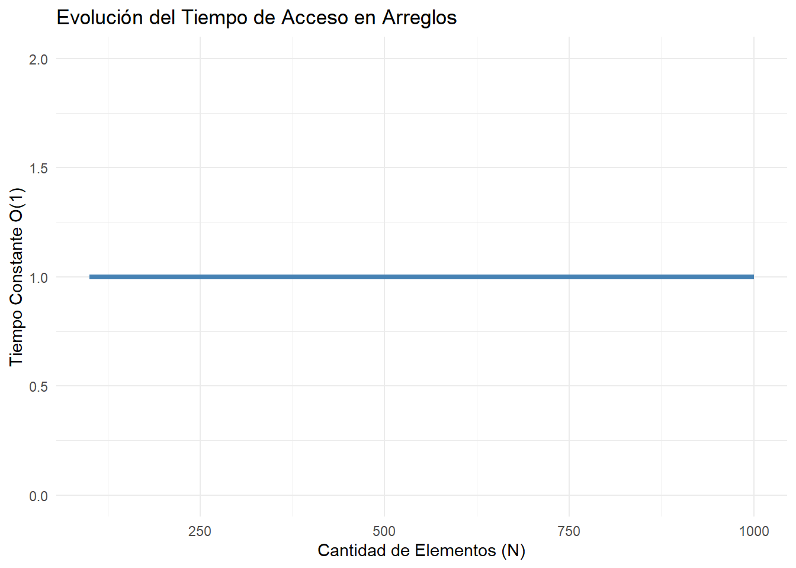

# Cargamos las librerías necesarias para las visualizaciones
library(tidyverse)
library(ggplot2)3 Capítulo 1: Estructuras Estáticas
3.1 Introducción
Imagina que tienes una caja de herramientas de tamaño fijo. Sabes exactamente cuántos compartimentos tiene y qué herramienta va en cada uno. No puedes hacer la caja más grande sin comprar una nueva, pero a cambio, encontrar un destornillador específico es instantáneo porque conoces su ubicación exacta. Así es exactamente como funcionan las estructuras de datos estáticas en memoria.
En este capítulo, exploraremos dos de las estructuras más fundamentales que comparten esta característica: los Arreglos (en memoria principal) y los Archivos (en memoria secundaria). Aunque en tus proyectos usarás lenguajes como Java o Python para interactuar con ellos, entender su comportamiento a nivel fundamental te dará el superpoder de escribir código increíblemente rápido y eficiente.
3.2 Arreglos: La Caja de Herramientas Estática
Un arreglo es una colección contigua de elementos del mismo tipo. Su tamaño se define en el momento de la creación y, por naturaleza, no resorte cambios dinámicos.
3.2.1 La Memoria como un Gran Casillero
Pensemos en la RAM como un edificio lleno de casilleros numerados secuencialmente.
// Ilustración en Java de la declaración de un arreglo
int[] calificaciones = new int[5];Cuando declaras ese arreglo en lenguajes fuertemente implementados como Java, el sistema operativo reserva 5 casilleros contiguos. Si la dirección base es la posición lógica 1000, y cada entero ocupa 4 bytes, el siguiente elemento estará en 1004, luego 1008, etc.
Esta contigüidad es la clave de su velocidad extrema de lectura: el tiempo de acceso es \(\mathcal{O}(1)\). Veamos una representación abstracta de cómo el tiempo de acceso se mantiene constante sin importar el volumen de la colección:
tamanios <- seq(100, 1000, by=100)
tiempo_acceso <- rep(1, length(tamanios)) # Tiempo constante O(1) simulado
ggplot(data.frame(tamanios, tiempo_acceso), aes(x = tamanios, y = tiempo_acceso)) +
geom_line(color = "steelblue", linewidth = 1.5) +
theme_minimal() +
labs(title = "Evolución del Tiempo de Acceso en Arreglos",
x = "Cantidad de Elementos (N)",
y = "Tiempo Constante O(1)") +
ylim(0, 2)
Como observamos en la Figura 3.1, buscar el elemento 500 toma idéntico esfuerzo que buscar el primer elemento. La máquina simplemente ejecuta un cálculo matemático de salto: Dirección Base + (Índice × Tamaño del Tipo).
3.2.2 El Lado Oscuro: Inserciones y Eliminaciones
Si bien acceder mediante un índice es magia pura, insertar un nuevo valor en medio del arreglo es un escenario diferente. Es similar a intentar meter un libro ancho en medio de un estante de biblioteca que ya está rebosante de tomos fuertemente empaquetados. Debes desplazar manualmente uno por uno todos los libros de la derecha para abrir un hueco.
Este corrimiento implica un tiempo que escala linealmente u \(\mathcal{O}(N)\) en el peor de los casos, preparando el terreno para la imperiosa necesidad de estructuras dinámicas que analizaremos más adelante.
3.3 Archivos: Persistencia más allá de la RAM
Mientras que los arreglos viven limitados al horizonte de la memoria volátil, los Archivos residen en el almacenamiento secundario. Funcionalmente, actúan como las inmensas bodegas a largo plazo de nuestra aplicación.
Al igual que un arreglo es una tira de variables, un archivo puede interpretarse en su abstracción más simple como un gran arreglo de bytes apilado permanentemente.
# Ejemplo ilusitrativo de cómo en Python el arreglo persistente
# se expone como un stream lineal de datos
with open("datos.txt", "w") as archivo:
archivo.write("Persistencia consolidada...")Interactuar físicamente con los discos magnéticos o solidos (I/O) siempre conlleva una penalización en latencia masiva comparado con la RAM. Por lo tanto, agrupar las peticiones (usando buffers locales basados en arreglos temporales rápidos) es la esencia clave para un I/O de calidad superior.
3.4 Matrices y Arreglos Multidimensionales
Un paso más allá del arreglo unidimensional (vector), encontramos las matrices. Representan datos tabulares (filas y columnas) o espacios \(N\)-dimensionales. En memoria, la computadora sigue siendo estrictamente lineal; no existe físicamente una “cuadrícula 2D” dentro de la RAM.
Para lograr esta ilusión de multidimensionalidad, los compiladores y lenguajes de programación utilizan técnicas de transformación matemática, como la representación Row-Major Order (orden contiguo por filas) o la instanciación de “arreglos de arreglos” (el enfoque típico en Java).
3.4.1 Mapeo de 2D a Memoria Lineal
Si tenemos una matriz cuadrática de \(3 \times 3\), en un enfoque de orden por filas, la primera fila completa ocupará las primeras 3 posiciones contiguas de memoria, seguida inmediatamente por la segunda fila, y así sucesivamente.
La fórmula de traducción de un índice lógico \((i, j)\) a una posición física lineal en una matriz de tamaño \(M \times N\) (filas \(\times\) columnas), asumiendo índices basados en cero, es:
\(Posición = DirecciónBase + (i \times N + j) \times TamañoDelDato\)
Esto garantiza que el acceso a cualquier celda de la matriz siga siendo una operación aritmética simple y, por tanto, mantenga un tiempo de acceso \(\mathcal{O}(1)\).
# Ejemplo en Python usando listas por comprensión para simular
# una matriz (comportamiento 2D) de 3x3 inicializada en 0:
matriz = [[0 for _ in range(3)] for _ in range(3)]
matriz[1][2] = 5 # Acceso lógico bidimensional O(1)3.5 Cadenas de Caracteres (Strings)
Las cadenas de texto, en su formato más fundacional (como en el lenguaje C), no son más que arreglos estáticos de caracteres primitivos (char) terminados por un carácter nulo (\0).
En lenguajes orientados a objetos modernos como Java y Python, la mayoría de los Strings se diseñan como objetos inmutables, respaldados internamente bajo el capó por un arreglo estático de caracteres (o bytes para codificaciones como UTF-8).
La Trampa del Rendimiento (Eficiencia \(\mathcal{O}(N^2)\))
Esta inmutabilidad tiene una consecuencia directa en el rendimiento algorítmico: cada vez que “modificas” un String (por ejemplo, concatenando un carácter dentro de un bucle for), el sistema no modifica el arreglo original porque es estático e inmutable. En su lugar, el sistema se ve forzado a solicitar nueva memoria, crear un nuevo arreglo estático más grande, y copiar secuencialmente todos los caracteres viejos más el nuevo.
Si repites esto miles de veces, el rendimiento de tu aplicación se desplomará drásticamente. Esta es la razón técnica por la cual, a nivel de síntesis de software avanzado, se debe utilizar StringBuilder en Java o métodos como ''.join(lista) en Python cuando se construyen concatenaciones masivas de texto.
3.6 Metodologías Activas
3.6.1 Autoevaluación
- Reflexiona: Si necesitas almacenar una lista de usuarios de un chat-room activo, donde participantes se desconectan aleatoriamente y entran otros a diferente ritmo; ¿Qué desventajas concretas sufriera tu servidor intentando gestionar esas bajas si solo posees estructuras de tipo arreglo puro?
- Experimenta Mentalmente: Modula la fórmula matemática de un arreglo
DirecciónBase + (Índice * OffsetBytes). ¿Qué ocurriría si intentaras buscarcalificaciones[10]en el arreglo de 5 casillas instanciado antes? ¿Hacia donde apunta la memoria? (Investiga el concepto de Buffer Overflow o excepcion Out of Bounds de Java).
3.6.2 Resolución de Problemas
El Reto de Fusión Cíclica (Merge Files)
Imagina un caso de la vida real: tienes en posesión dos archivos gigantes, registros_A.csv y registros_B.csv, y ambos contienen columnas financieras estáticas formadas por IDs crecientes ordenados ascendentemente (1, 2, 5… | 3, 4, 6…). Están ubicados en el lenta memoria secundaria, pero son colosales; no todos los IDs caben dentro del corto cinturón RAM como arreglos masivos.
Tu misión: Escribe pseudocódigo o diseña la arquitectura paso-a-paso de una rutina (estilo de las que implementaríamos en Java o Python) que logre leer ambos archivos simultáneamente e ir inyectando sus datos fusionados iterativamente de manera sincronizada en un gran y final merge.csv ordenado, utilizando exclusivamente de a 2 casillas temporales en tu RAM mientras iteran.
Este ejercicio fusiona lo mejor de ambos mundos: la inmensa capacidad de iteración de flujos de archivos estáticos y punteros lógicos en arreglos de retención. ¡Presenta tu algoritmo en el siguiente encuentro de codiseño!